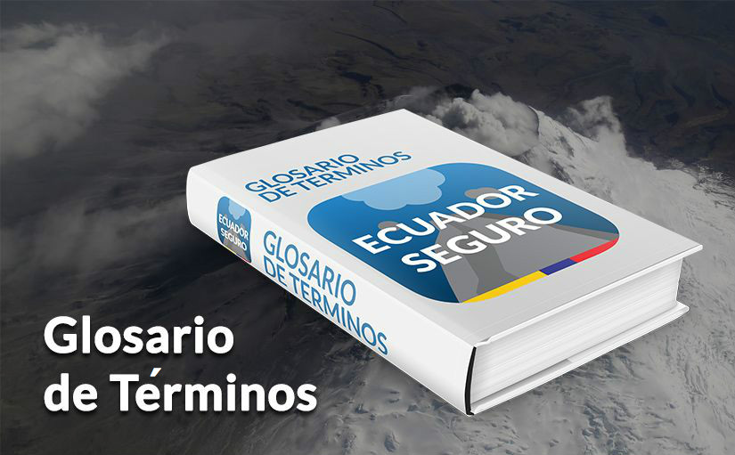
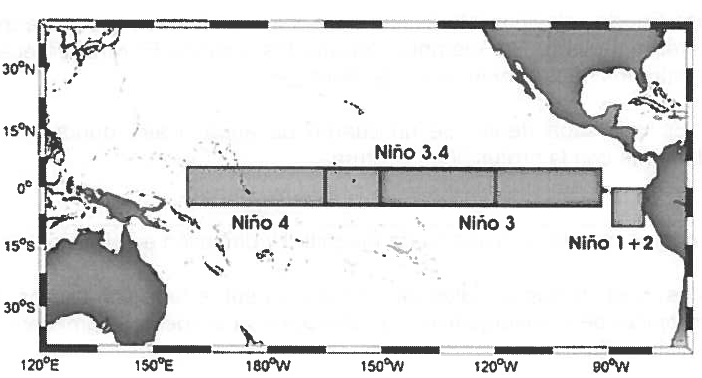

Anomalía: Diferencia entre el valor de una variable (por ejemplo, temperatura) y su promedio de largo plazo.
Anomalía: Diferencia entre el valor de una variable (por ejemplo, temperatura) y su promedio de largo plazo.|  |
Glosario de Términos ENOS.
Anomalía: Diferencia entre el valor de una variable (por ejemplo, temperatura) y su promedio de largo plazo.
Afectado: Persona a la cual la manifestación de un fenómeno destructor le produce fatiga, perturbación, incomodidad, leve daño físico o falta de salud, pérdida de bienes, en general pérdida de calidad de vida.
Circulación: Flujo o movimiento de un fluido.
Climatología: Estudio científico del clima.
Convección: Transferencia de calor dentro del aire por su movimiento. Se usa específicamente para describir el transporte vertical de calor y humedad, especialmente por las corrientes ascendentes y descendentes de la atmósfera inestable.
Contingencia: Es un hecho o evento que tiene carácter de contingente, es decir que puede suceder o no. Para el efecto que se diese la posible ocurrencia o inminencia de un evento particular desastroso que afectaría a un escenario geográfico definido.
Cumulonimbus: Un tipo de nube que es densa y desarrollada verticalmente. Se asocia con la lluvia (en particular de carácter convectivo).
Corriente en chorro (jet stream): Vientos fuertes concentrados en una estrecha banda situada en la atmósfera superior. Suele hacer referencia a vientos horizontales en altura.
Damnificado: Persona afectada parcial o íntegramente por los efectos de un fenómeno y que ha sufrido daño en su salud y/o perjuicio en sus bienes, requiriendo la asistencia humanitaria del Estado para superar de urgencia su situación.
Emergencia: Es el resultado de un fenómeno destructor que incide en la vida humana, salud y bienes de una población determinada, por las condiciones de vulnerabilidad física, cultural y social en que éstas se encuentran. Por lo tanto tendrá en la zona afectada un escenario con damnificados, heridos, muertos, destrucción de viviendas, de infraestructura del desarrollo especialmente vial, agrícola, pesquero, energético, educación, salud, locales públicos y servicios básicos.
El Niño-Oscilación del Sur (ENOS): Es un conjunto de anomalías climáticas mejor representadas por las variaciones interanuales de la temperatura superficial del mar (componente oceánica o El Niño) y de la presión superficial (componente atmosférica u Oscilación del Sur) del Pacífico tropical. El ENOS tiene tres fases: una cálida (también llamada "El Niño") y una fría ("La Niña). Ambas fases implican cambios en la atmósfera y el oceáno debido a que el ENOS es un evento acoplado. En medio de ambas está la fase neutral, que expresa condiciones promedio en ambos componentes.
El Niño: Fase cálida del fenómeno ENOS. Se caracteriza por el debilitamiento a gran escala de los vientos alisios, y por un calentamiento superficial del Pacífico Ecuatorial Oriental y Central.
Índice de Oscilación del Sur (IOS): Diferencia normalizada entre la anomalía mensual de presión atmosférica superficial en Tahití (Polinesia francesa) y Darwin (Australia). Períodos prolongados de valores negativos (positivos) del IOS coinciden con aguas anormalmente cálidas (frías) a lo largo del Pacífico tropical, las cuales son típicas de un evento El Niño (La Niña).
Isoterma: Línea de temperatura igual o constante.
La Niña: Fase fría del fenómeno ENOS. Se caracteriza por un fortalecimiento a gran escala de los vientos alisios, y un enfriamiento superficial del Pacífico ecuatorial oriental y central.
Mitigación: Son medidas o acciones de intervención implementados para la vulnerabilidad para reducir el riesgo existente, y así disminuir los daños y el impacto potencial.
Modelo acoplado: Tipo de modelo analítico o numérico dependiente del tiempo, en el cual al menos dos subsistemas del clima terrestre interactúan el uno con el otro (e.g. atmósfera y aceáno).
Monzón: Viento periódico persistente que a menudo produce el régimen de precipitación de las distintas estaciones. Se emplea principalmente para describir los cambios metereológicos en las regiones sur y este de Asia.
Normales climatológicas: Valores medios de las variables metereológicas y oceanográficas (temperatura, salinidad, humedad, precipitación, evaporación, etc.) calculados con los datos recolectados durante un periodo largo y relativamente uniforme, generalmente de 30 años.
Ondas de Kelvin ecuatoriales: Onda largas de gravedad que se propagan de manera no-dispersiva sólo hacia el este, a lo largo del Ecuador (entre +/- 4.4 grados), a una velocidad de 2-3 ms. Las ondas de Kelvin constituyen el principal medio de ajuste oceánico a las variaciones del viento tropical, lo que le permite transmitir de manera efectiva la variabilidad oceánica desde el Pacífico ecuatorial central hacia el oriental. También juegan un rol clave en la dinámica del ENOS, sirviendo como mecanismo de inicio del evento, o como medio para sostenerlo.
Oscilación del Sur (OS): Inversión periódica del patrón de presión a lo largo del oceáno Pacífico tropical durante episodios El Niño.
Plagas: Calamidad que afecta a un pueblo o comunidad, por ejemplo, una inmensa cantidad de insectos o parásitos que pueden destruir los cultivos.
Plan de Contingencia: Son los procedimientos específicos pre-estabecidos de coordinación, alerta, movilización y respuesta ante la ocurrencia o inminencia de un evento particular para el cual se tiene escenarios definidos. Por lo señalado, tiene caracter opcional, cuando se presumen las condiciones indicadas. Se elabora a nivel Nacional, Sectorial, Regional, Provincial y Distrital.
Presión Atmosférica: Presión que ejerce la atmósfera en un punto específico como consecuencia de la acción de la fuerza de gravedad sobre la columna de aire que se encuentra encima de este punto, se expresa en milímetros de mercurio (mm de Hg).
Preparación: Es un conjunto de medidas y acciones desarrolladas para organizar, facilitar los operativos y recuperarse de forma efectiva en situaciones de emergencia y desastres.
Prevención: Conjunto de medidas y acciones que se implementan con anticipación para evitar o impedir que se presenten y generen nuevos riesgos.
Regiones El Niño: Son áreas del Pacífico ecuatorial que permiten caracterizar a los eventos ENOS mediante el promedio de sus valores de temperatura superficial del mar (TSM). De oeste a este estas regiones son: Niño 4, Niño 3, Niño 3.4 y Niño 1+2. Las anomalías de TSM en estas regiosnes son generalmente conocidas como "Índices Niño". La región Niño 1+2 abarca las costas de Perú y Ecuador. Las anomalías de TSM en esta región representan un indicador de los cambios inducidos por El Niño en los patrones de variabilidad de la costa del Pacífico del América del Sur.
|  |
Ondas estacionarias (stationary waves): Onda (patrón de flujo que exhibe periodicidad temporal y/o espacial) cuya posición es fija respecto de la Tierra. La termoclina comúnmente sirve como medio de propagación de ondas internas, (e.g., ondas de Kelvin ecuatoriales). A lo largo del Pacífico ecuatorial, la termoclina es bien representada por la profundidad de la isoterma de 20 grados C, la cual se encuentra en promedio entre los 150m (Pacífico ecuatorial occidental) y los 50m (Pacífico ecuatorial oriental).
Respuesta: Conjunto de acciones y procedimientos que se desarrollan durante la ocurrencia de una emergencia o desastre, con el objetivo de minimizar los efectos adversos en las personas, bienes y servicios.
Rehabilitación: Consiste en restablecer con corto plazo las condiciones normales, mediante la reparación de los servicios sociales básicos.
Surgencia: Es un movimiento ascendente de agua sub-superficial por el cual el agua de los estratos más profundos es llevada a las capas más superficiales del oceáno, y removida del área por un flujo divergente horizontal. En el Pacífico, los casos más representativos de eventos de surgencia se dan a lo largo de la costa oeste de Sudamérica (Perú y Chile) y en el Pacífico central. Estos ecosistemas generalmente soportan las más grandes pesquerías del planeta (e.g., California y Perú).
Sequía: Prolongado período (meses o años) durante el cual, una zona de la tierra no recibe agua de lluvia, lo que causa graves daños a los cultivos, los animales y las personas. Puede incluso provocar muertes.
Trayectoria de la tormenta (storm track): La trayectoria seguida por el centro de una baja (de la presión atmosférica).
Temperatura: Una medida de la energía cinética de un cuerpo o sustancia. Se puede medir en grados kelvin, Fahrenheit o centígrado.
Teleconexión: Fuerte relación estadística entre las manifestaciones metereológicas de diferentes partes del globo. Por ejemplo, durante los eventos El Niño parece haber una teleconexión entre los trópicos y América del Norte.
Termoclina: Es una capa dentro de un cuerpo de agua o aire donde la temperatura cambia rápidamente con la profundidad o altura.
Viento: Aire que se mueve, con una cierta magnitud y dirección en su velocidad.
Vientos Alisios: Vientos superficiales que convergen sobre la región tropical para formar la Zona Intertropical de Convergencia, con dirección al suroeste (hemisferio norte) y al noroeste (hemisferio sur).
Zona de Convergencia Intertropical (ZCIT): Región donde convergen los vientos alisios del hemisferio norte con los del hemisferio sur. La ZCIT, también conocida como el Ecuador metereológico, está caracterizada por una gran concentración de sistemas nubosos y baja presión.